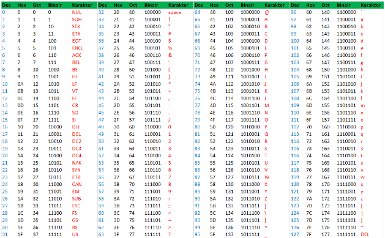

In het binair stelsel tellen ze op een andere manier dan wij gewend zijn, wij hebben namelijk het decimalen talstelsel. Het decimale talstelsel, ook wel tientallige talstelsel genoemd, is onze huidige manier van cijfers opschrijven. In tientallige talstelsel, wat de naam al zegt, komen de getallen 0 tot en met 9 voor. In totaal dus 10 cijfers. We gebruiken bij informatica het binair stelsel, omdat onze computers bestaan uit bits en bytes die je aan of uit kan zetten door de cijfers 0 of 1 uit het binair stelsel. Hieronder lees je meer over hoe je telt en werkt met het binair stelsel, en wat bits en bytes zijn op een simpele manier.

Het binair stelsel werkt met machten van 2 (2¹, 2², 2³, enz.). Zoals in het plaatje hiernaast zie je dat de cijfers van rechts naar links staan, de getallen 2 t/m 16 zijn allemaal machten van 2. In het binair stelsel heb je maar 2 cijfers, 0 en 1, en daarmee kun je alle getallen maken. Hoe dat werkt, leg ik uit aan de hand van het plaatje hiernaast. Door getallen te kunnen maken met het binair stelsel, moet je verschillende getallen optellen bij elkaar om het gewenste getal te krijgen. Op een makkelijkere manier: Je selecteert welke getallen uit het decimalen talstelsel wil hebben. Stel dat je 20 wil maken, moet je 16 en 4 hebben, in het binair stelsel noem je die 2 cijfers ‘’1’’ en de rest ertussen of ervoor noem je ‘’0’’, dat betekent dat je die niet meetelt in je som (Zie plaatje). Zo geldt hetzelfde voor als je het getal 155 wil maken, je hebt de getallen: 128, 16, 8, 2 en 1 nodig. Je zet de machten van 2 van rechts naar links neer, dus: 128 - 64 -32 - 16 - 8 - 4 - 2 - 1. Je selecteert de getallen die je nodig hebt door eronder een 1 te schrijven, bij de getallen die je niet nodig hebt zet je er een 0 onder. Onthoud dat het opschrijven op deze manier dient als hulpmiddel om onze decimale getallen om te zetten in binaire getallen. Als je aan het einde de getallen optelt die je hebt geselecteerd, kom je dus uit op 155 en als je kijkt naar het getal dat je hebt gemaakt met de binaire cijfers, heb je nu 155 in het binair staan.
Onze computers bestaan uit kleine deeltjes genaamd bits en bytes. Een byte bestaat uit 7 of 8 bits, dat zijn de kleinste deeltjes waar je informatie mee op kunt slaan op je computer, en benoem je met 1 of 0, die kun je aan (1) en uit (0) zetten. Bits en Bytes vertalen woorden en tekens in computertaal (het binair stelsel). Wat voor binaire getallen dit allemaal zijn, kun je vinden in de ASCII-tabel (zie plaatje hiernaast), ASCII staat voor American Standard Code for Information Interchange. Er zijn in totaal 256 combinaties die je kan maken met bits in een byte en er zijn in totaal 128 tekens die je ermee kan maken, dat zijn hoofdletters, kleine letters, cijfers en speciale tekens zoals !@#$%&. Door ASCII kunnen de computerdelen makkelijk communiceren. Hieronder vind je de ASCII-tabel met codes en binaire waarden.
Hopelijk begrijp je het nu! Speel het spelletje hieronder om je nieuwe kennis uit te testen. Voor extra uitleg over het binairstelsel, klik hier